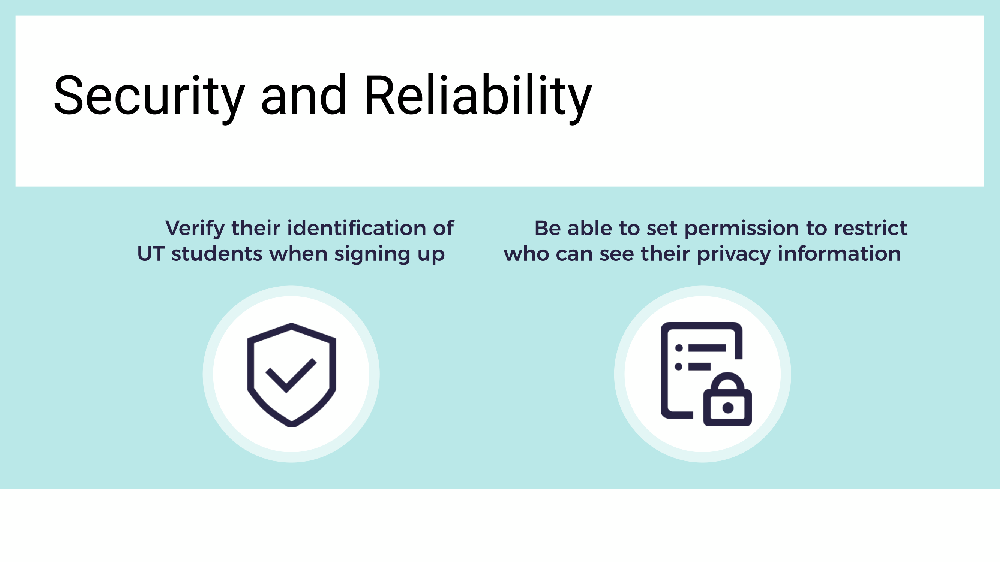
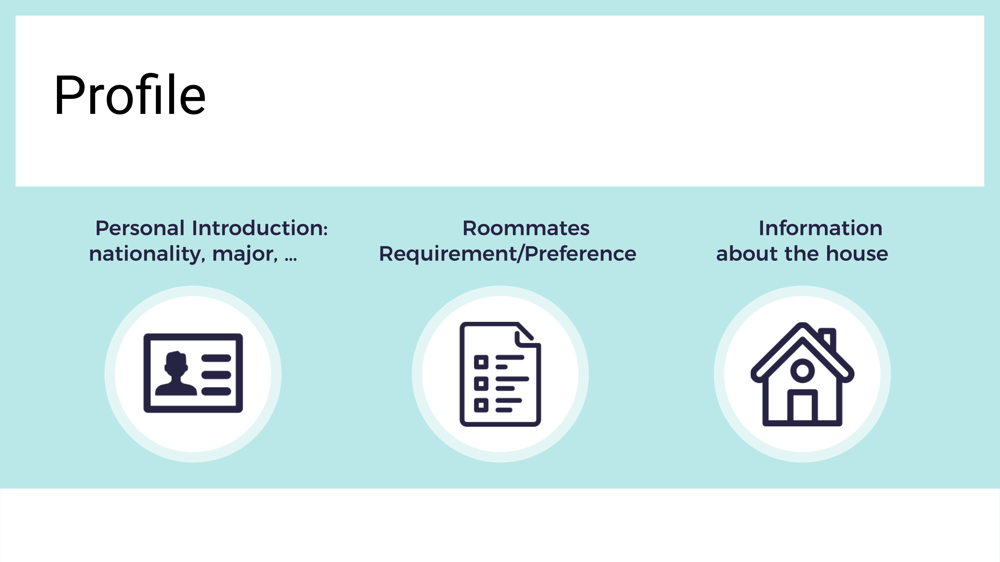
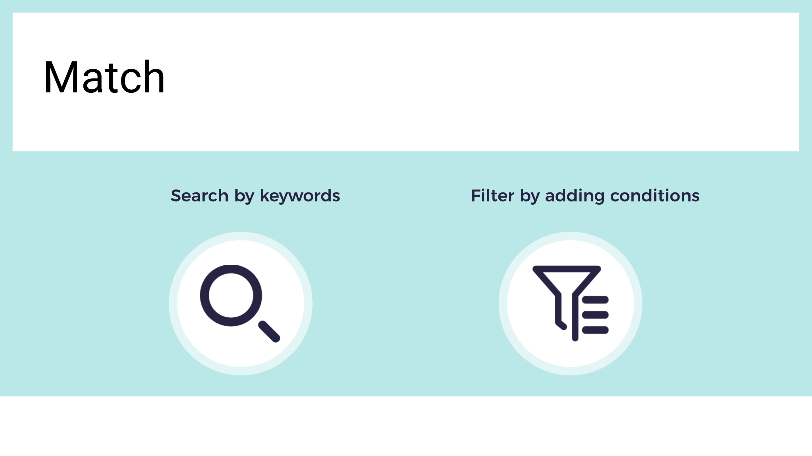
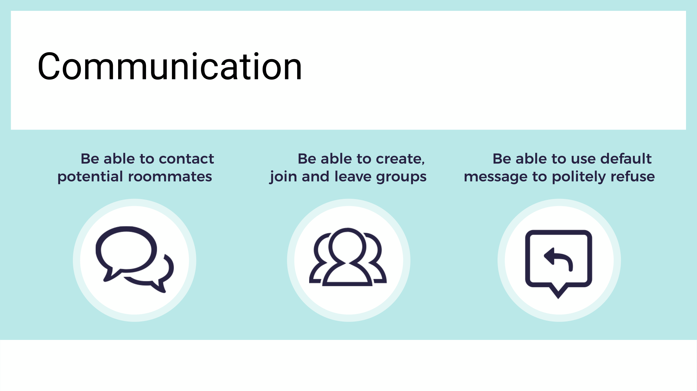
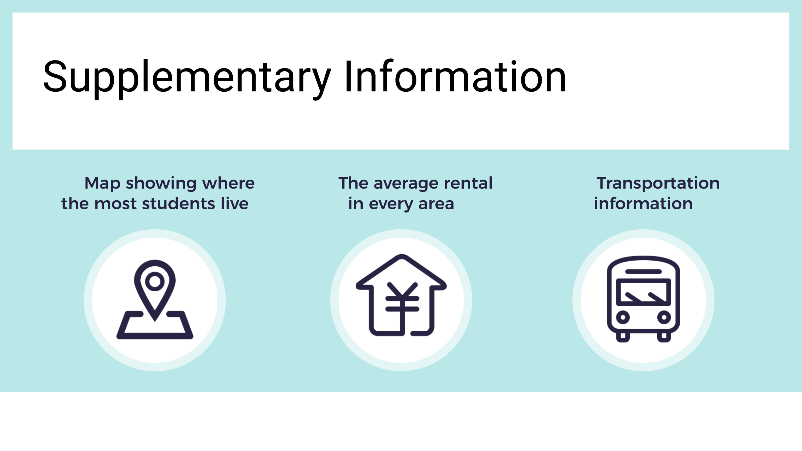

Sep. 2019- Nov. 2019
Jiaxuan Wang,
ChunWei Wang
UX Research,
UX Designer
iRoommate is an app that assists UT students in finding the ideal roommate. It makes finding roommates easier by providing a dependable, considerate, and integrated system.
My responsibilities included user interaction research, design, and testing.
Every year, over 50,000 students enroll at UT Austin, with more than 20% of them being new to the state and in need of accommodations. However, students are constantly struggling to find suitable roommates because they are unfamiliar with the area and have no idea who else is looking for a roommate.
To better understand students' needs, we conducted contextual inquiry and analysis. We interviewed seven students who had experiences in looking for roommates. Students with different backgrounds may have different approaches and concerns while looking for roommates. To meet this diversity, our participants come from four different countries
To collect task data, we designed a set of observation questions and asked the participants to demonstrate the process of how they found their roommates. The participants showed us how they viewed information on the channel they use, how they posted their requirements, and how they contacted the potential roommates. From the demonstration, we collected the information that participants valued, their rationale for identifying who would be the potential roommates, and the issues they faced.

To find insight, we create work activity affinity diagram. We wrote work activity notes onto post-its and synthesized them.
We went over the work activity affinity diagram and extracted requirements based on our key finding.
    We also developed Hierarchical Task Inventory based on the four main tasks and actions that users would do in our system. The goals of these main tasks are create account, look for roommates, contact potential roommates, and supplementary information seeking. By developing Hierarchical Task Inventory, we seek to explore more about how users would interact with the system.
Based on the requirements and tasks, we started the interface design brainstorming phase. This is when teamwork values. Everyone put forward ideas freely or thought about improvement based on others’ half-baked ideas. We also sketched on paper to help present our ideas and drew down which solution we had selected.